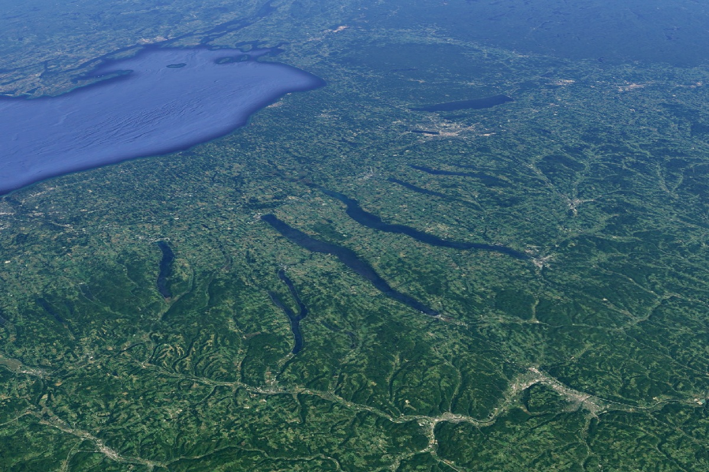

EXPLORE
A glimpse into the Finger Lake region
Here in the Finger Lakes, you have the luxury of choice. Explore our wide-open spaces and changing seasons, shop at local boutiques, find your new favorite way to get on the water, immerse yourself in arts and culture, and find activities that create your lake retreat at any price point. Check out the things to do below to start planning your Finger Lakes getaway! (1)
Upcoming Events
Group Water Biking
June 6, 2025

Grab or rent a bike and join us as we bike along the beautiful lake.
Sunrise Paddle boarding
June 15, 2025

Rise and shine on the water as you paddleboard to the sun and beyond.
Fishing Competition
June 22, 2025
Grab your sunscreen, lawnchair, and fishing hooks and catch the biggest fish.
Learn How to Sail
June 27, 2025

Always wanted to sail the seven seas? Now's your chance to learn on a calm lake.
Behind the Region
Geologists say, The Finger Lakes were formed more than 2 million years ago, during the Pleistocene Ice Age. Glaciers crept through the area and carved deep slices into the land, pushing the earth and rocks south. Gradually the ice melted and the glaciers receded, leaving shale valleys of water, which are now the Finger Lakes. (1)
Get in touch with nature
Landscape

New York State's only national forest, with open land, free-ranging cattle, and over 30 miles of trails. It's home to a variety of wildlife, including grassland birds, shrubland birds, and forest birds. (2)
Lakes

There are 11 gorgeous Finger Lakes. From west to east they are: Conesus, Hemlock, Canadice, Honeoye, Canandaigua, Keuka, Seneca, Cayuga, Owasco, Skaneateles, and Otisco. (1)
Weather
The overall climate of the region is cool and continental, moderated by the Great Lakes and the influences of the Finger Lakes—deep, elongated lakes that accumulate heat during the summer and release heat during the winter. (3)